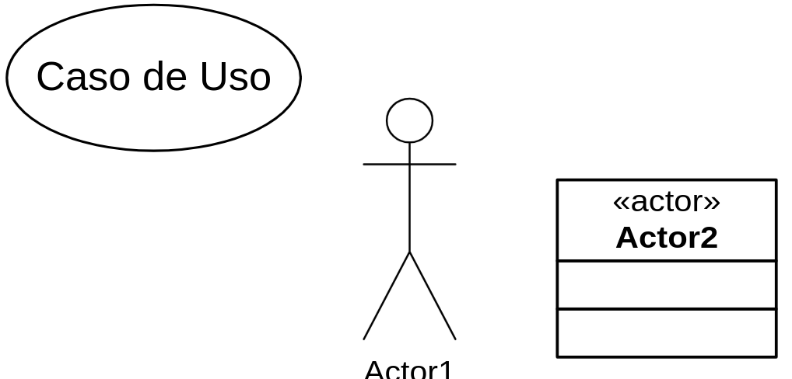
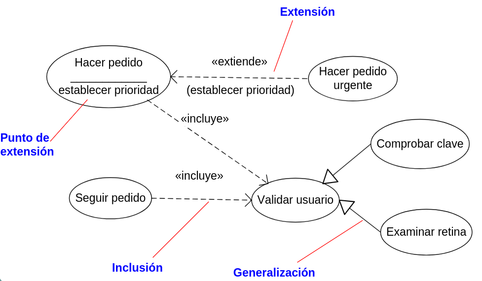
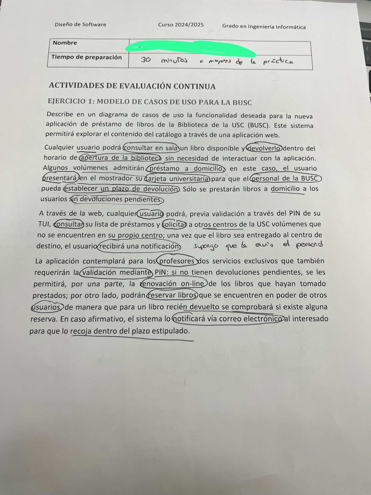
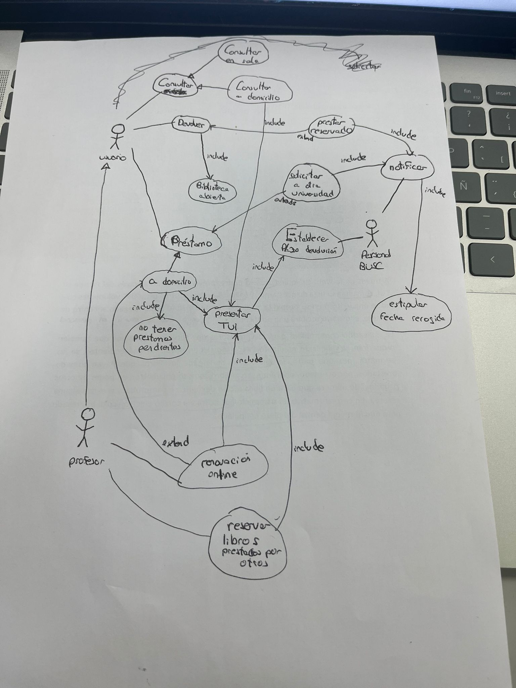

Modelado de Casos de Uso
(diagrama de casos de uso)
Los casos de uso capturan el comportamiento deseado del sistema sin especificar como implementarlo. Son conjuntos de secuencias de acciones que ejecuta un sistema para producir un resultado observable de valor para un actor.
Una secuencia es una interacción del sistema con elementos externos. Un actor es un rol que juega un usuario o un sistema al interaccionar con el sistema. El mismo actor puede desenvolver varios roles. Un escenario es una instancia del caso de uso.

Los casos de uso se especifican textualmente como un flujo de eventos, incluyendo un escenario principal y sus alternativas. Capturan comportamientos sin especificar la implementación, y se realizan creando colaboraciones de clases y otros elementos. Un caso de uso bien estructurado denota un comportamiento simple e identificable, identifica actores que interactúan con él. Incorpora comportamiento común incluyendo otros casos de uso y coloca variantes en casos de uso que lo extienden, describe el flujo de eventos con los usuarios por medio de escenarios, y especifica pre y post condiciones.
Los diagrama de casos de uso visualizan el comportamiento de un sistema y se usan para modelar el contexto (que elementos están fuera y cuales dentro) y los requisitos funcionales (especificar que debería hacer) de un sistema. Se compone de:
- Actores
- Casos de uso
- Asociaciones entre actores y casos de uso
- Relaciones entre casos de uso (generalización, inclusión, extensión) o entre actores (generalización)
En la generalización se hereda el comportamiento de un caso de uso, pudiendo añadir o redefinir comportamiento, para modelar cosas de uso que hacen un poco más.
En la inclusión, un caso de uso incorpora el comportamiento de otro, para evitar repetir comportamiento común.
En la extensión, un caso de uso modifica el comportamiento de otro en puntos de extensión, para describir variaciones.

[!Examen Parcial]

